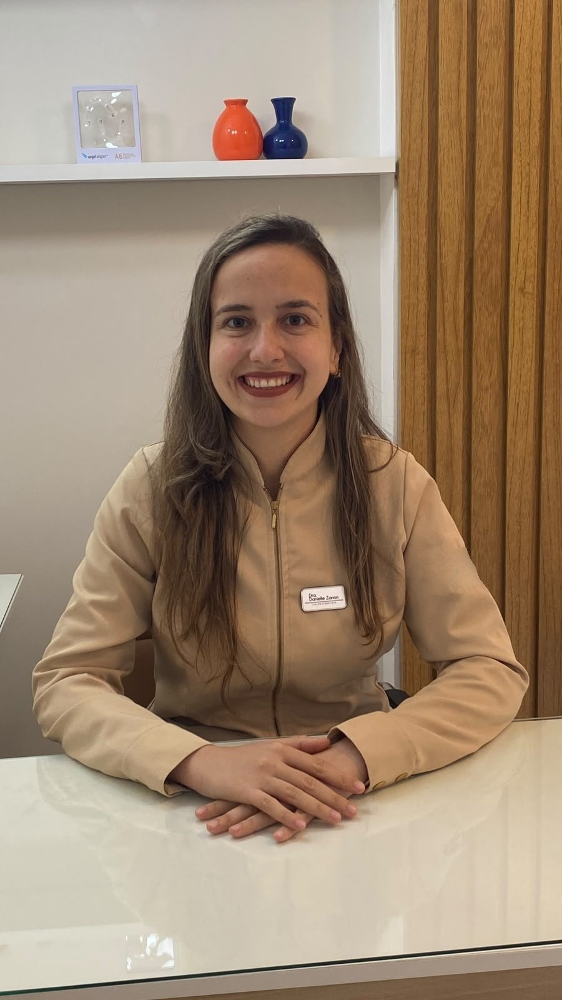
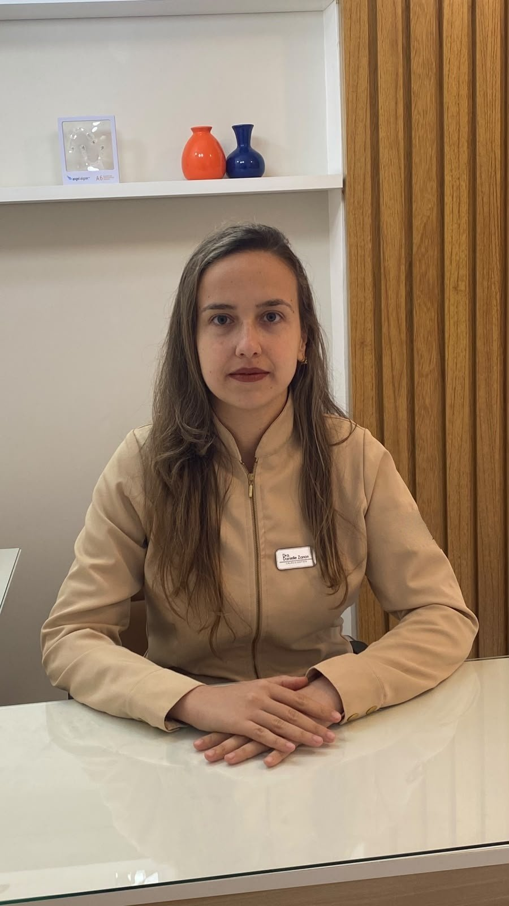

Avaliação e prevenção
Consulta completa, diagnóstico e orientação de higiene para manter dentes e gengivas saudáveis.
Cirurgiã-Dentista · Méier, RJ
Atendimento odontológico próximo, sem pressa, com explicação clara de cada etapa do tratamento.

Atendimento humanizadoTempo para ouvir, explicar e planejar com você.
Atendimento no MéierRio de Janeiro, RJ.
Agendamento simplesMarque sua avaliação direto pelo WhatsApp.

Sobre mim
Sou Cirurgiã-Dentista, registrada no CRO-RJ sob o nº 55775, e atendo no Méier, no Rio de Janeiro.
Acredito que uma boa consulta começa por uma conversa: entender o que incomoda, explicar as opções de tratamento com clareza e decidir junto com o paciente o melhor caminho. Meu objetivo é que cada pessoa saia do consultório mais tranquila e confiante com o próprio sorriso.
Tratamentos
Consulta completa, diagnóstico e orientação de higiene para manter dentes e gengivas saudáveis.
Tratamento de cáries e reparo de dentes desgastados ou fraturados, com resinas na cor do dente.
Clareamento com acompanhamento profissional, para um sorriso mais claro com segurança.
Ajustes de forma e cor dos dentes para um sorriso harmônico e natural.
A limpeza profissional: remoção da placa bacteriana e do tártaro acima da gengiva, seguida de polimento dos dentes. Ajuda a prevenir cáries, gengivite e periodontite.
Atendimento das principais necessidades do dia a dia, com encaminhamento quando preciso.
Planejamento completo para devolver a função mastigatória, a estética e o conforto do sorriso, combinando restaurações, próteses e outros tratamentos.
Reposição de dentes perdidos ou muito danificados com coroas, pontes e próteses fixas ou removíveis, feitas sob medida para um resultado natural.
Especialidade que restaura a forma, a cor e a função dos dentes: restaurações em resina, facetas, fechamento de espaços e clareamento.
Contato
Fale comigo pelo WhatsApp para tirar dúvidas e agendar sua avaliação.